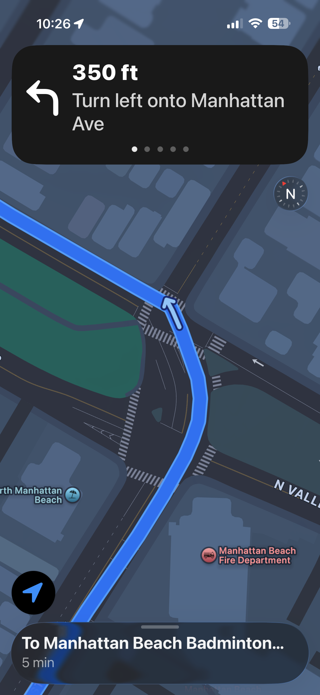
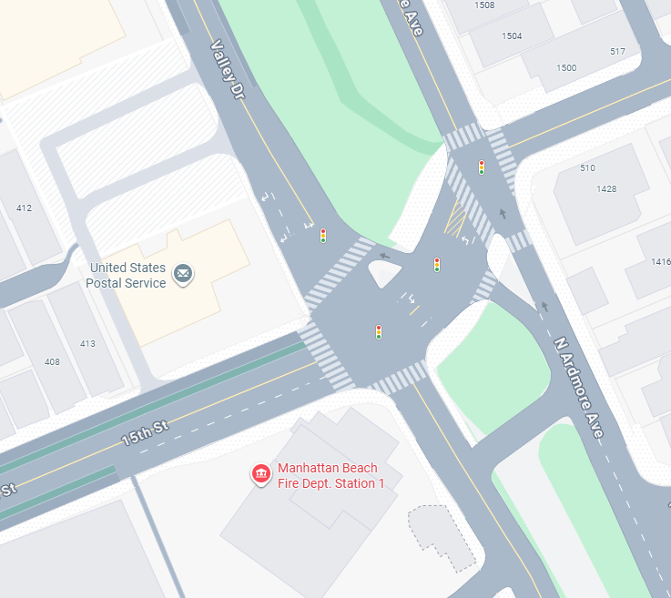
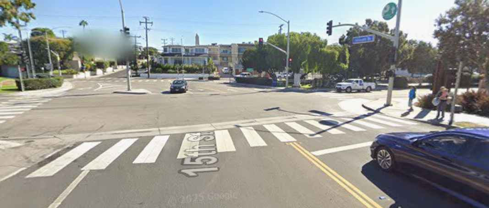
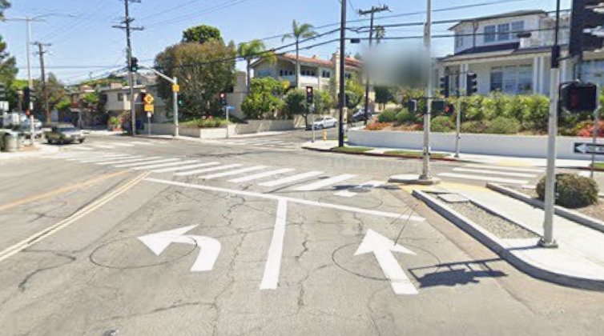
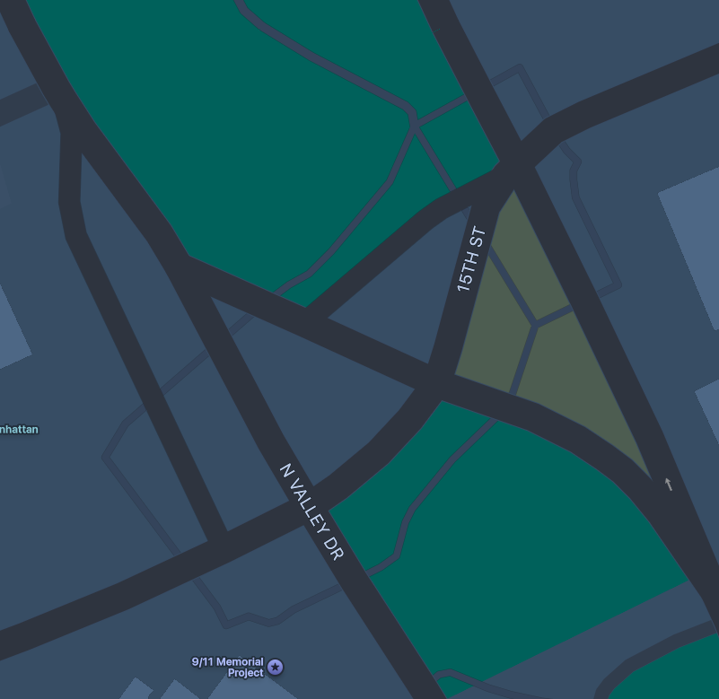
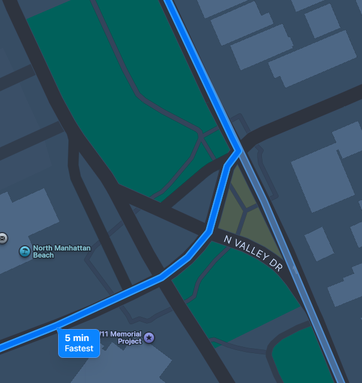

1. The Goal
This is a small quality-of-life addition to Apple Maps. The change is one existing visual element rendered on one surface where it currently does not appear, even though Apple already has everything needed to draw it there.
Everything below comes from my own device, verified on September 2, 2026, on an iPhone 16 running iOS 26.6.1.
2. The finding
Apple Maps gives every upcoming maneuver two simultaneous representations. The banner at the top carries a text instruction and an arrow glyph chosen from a fixed set. The map below it draws the route, and in the step view it draws an arrow through the junction at the maneuver's actual angle.
However, there are many scenarios where an arrow drawn on the route can provide much-needed context. For example, at shallow-angle junctions those two representations disagree, and the disagreement is visible inside a single frame.

That frame is the Steps view, reached before navigation starts. It matters that the two representations sit together here, because this is the one surface where a driver can quickly see additional route context, and it is the clarity they lose when they press Go.
The word left and a ninety-degree glyph both tell a driver to look for a road peeling off sharply. The road they actually want continues nearly straight ahead. That mismatch is cheap to recover from on an empty two-way street. It is not cheap at a junction like this one, which is why providing additional context through a route arrow can be valuable.
Why this junction is a bad place to be wrong
15th Street crosses North Valley Drive and North Ardmore Avenue in Manhattan Beach. Valley and Ardmore run as a parallel pair on either side of a landscaped strip, which makes this a compound junction: two signalized crossings roughly 40 feet apart.



Three things happen at once on this approach. Signals for the near and far crossings appear together in one field of view. The through path bends slightly, so continuing straight already feels like a small turn. And a dedicated left-turn lane sits immediately beside the lane that continues through, so “left” has two plausible readings before the instruction is even considered.
The banner announces the maneuver at 350 feet, but the lane has to be chosen well before that distance runs out. At 30 to 35 mph, the last hundred feet is about two seconds to read the instruction, pick a lane, and identify which signal applies.
3. The current implementation
- Apple has junction geometry good enough to draw a correct path through a complex junction. The step detail view renders a directional arrow at the maneuver's real angle.
- Apple has already designed the visual answer to “which way through this junction,” and it is an arrow.
- That arrow lives in the planning surface. It is reached by tapping the route card anywhere except Go and opening the list of turns.
- During active guidance the instruction is carried by the banner and, on some roads, the lane guidance bar.


Google renders a similar overhead junction diagram on some maneuvers during navigation. I am not proposing that, and the difference matters to the argument below: Apple would be moving an asset it already computes rather than building a new one.
Why Apple made this design choice
The most likely reason is division of labor. During guidance the banner and lane bar carry instruction while the map carries position, and mixing those two roles has a real cost in attention. The planning surface has no such constraint, because nobody is driving while they read it. Assuming that reasoning, my own confusion at this junction is an example of where the current design needs improvement.
4. The addition
Draw the maneuver arrow directly onto the route line during active guidance, at the same angle the step view already uses, whenever a maneuver is within announcement range.
The arrow is always rendered. The addition is aimed at the case where the banner has already failed.
That case is worth naming precisely. A driver who finds the banner insufficient is already looking at the map. That glance is being spent today, and today it returns nothing useful, because the arrow that would answer the question sits on a screen they left when they pressed Go. This does not add an attention demand so much as put something worth finding where a driver is already looking.
During guidance the map is heading-locked and tilted, so the arrow is already registered to what the driver sees through the windshield, and it sits just ahead of the position puck rather than somewhere they have to hunt for.
Why not just fix the banner glyph
If Apple's icon set includes a shallow-left arrow, then the data and the correct output both already exist and this maneuver was simply put in the wrong angle bucket. Fixing the classification would be the pure answer. In practice I would still draw the arrow first. It gives the driver the surrounding context the glyph cannot, and it can ship without touching classification thresholds that affect every junction Apple routes through.
Rendering an arrow Apple already computes, on a surface where it already draws the route, is bounded and reversible. The classification cleanup is a longer track that can run behind it.
Smallest version
- Only maneuvers Apple already classifies as a turn, on surface streets.
- Only where the step view would already draw an arrow, so no new geometry work.
- Appears with the banner announcement and clears once the maneuver completes.
- No new setting, no onboarding, nothing to discover and enable.
5. The Disclaimer
- This does not tell you which signal head is yours. That was a real part of my confusion at this junction and the arrow does not address it. No navigation app does, and proposing one would be a far larger and more consequential feature than this.
- This is not a safety claim. I have not measured eyes-off-road time and I am not asserting a collision reduction. The claim is narrower: less time spent uncertain at a junction where the banner is ambiguous.
- Two surfaces can disagree, and this change makes the disagreement visible. When the glyph and the arrow conflict, the arrow is the geometry and the glyph is the label, so the arrow should win. That means shipping a visible inconsistency on purpose until the classification work lands.
6. The Pre-Validation
- Does the arrow actually help, in a still frame? Show drivers one frame with the banner alone and one with the banner plus arrow, ask which way they would go and how confident they are, and record response time.
- How often does the lane guidance bar already cover this? If the lane bar reliably fires at the junctions I care about, the gap is smaller than I think and the scope should shrink.
- Does it add clutter that costs more than it returns? The arrow is always drawn, which is a permanent change to a screen people look at for hours. Worth testing on dense junctions rather than clean ones.
7. The Sources
- My own device, an iPhone 16 running iOS 26.6.1. Screenshots and replication notes, September 2, 2026.
- Google Maps and Google Street View imagery of 15th Street at North Valley Drive and North Ardmore Avenue, Manhattan Beach, California, captured September 2, 2026. Imagery © Google.
- Apple support documentation on viewing route steps in Maps. support.apple.com/guide/iphone/use-maps-iph02f94fc1c/ios